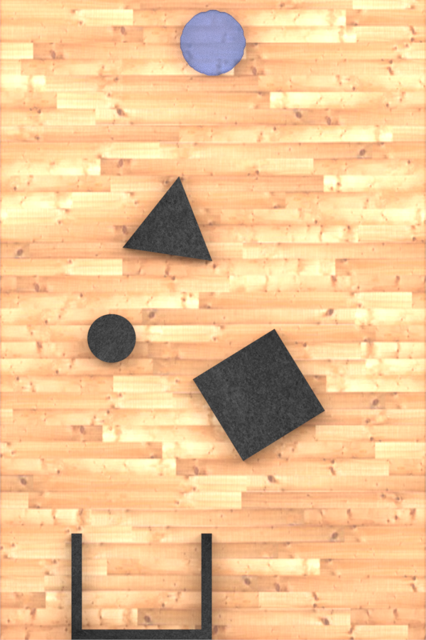
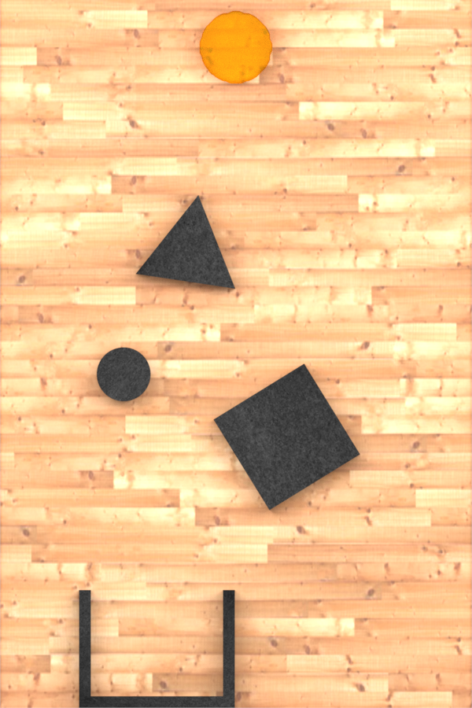
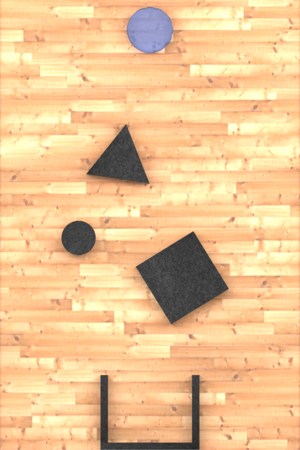
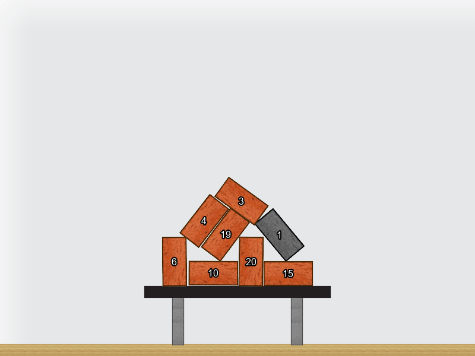
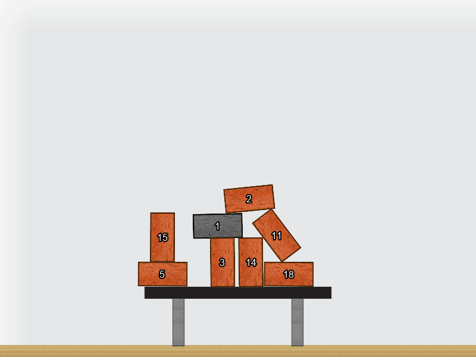
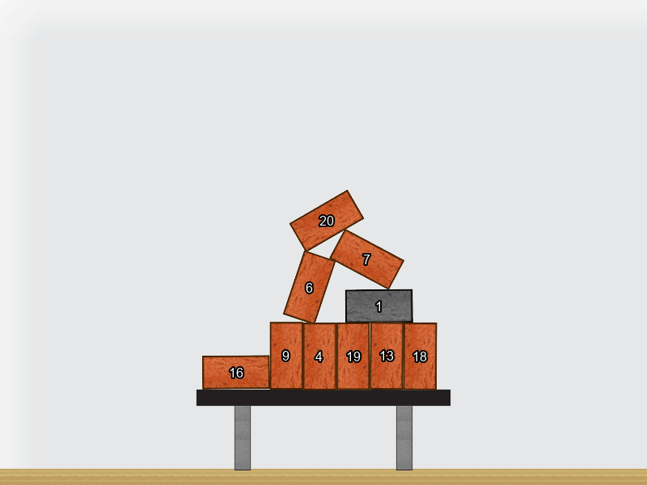

Object masks, boxes, centers, velocities, visibility, trails, contacts, and events remain in image coordinates.
Architecture
One code store, two geometry paths.
Semantic grounding, segmentation, geometry, and tracking remain inspectable at every time step. The representation keeps direct model outputs separate from computed motion and relations.
- 01Semantic groundingQwen2.5-VL identifies contract-bound scene objects.
- 02Video segmentationSAM3.1 produces object masks and 2D boxes.
- 03Geometry extractionVGGT-Omega adds depth, point maps, and camera for 3D scenes.
- 04Object trackingMask-owned points preserve identity and motion through time.
- 054D code storeDirect fields, computed geometry, events, and relations share one schema.
Mask pixels are lifted with VGGT-Omega, associated with SpatialTrackerV2 tracklets, and serialized as moving oriented cuboids and local SE(3).
Toolbox evaluation
Measure the code, the tools, and the reasoning.
Qwen3-4B answers Physics questions by selecting compact tools over prediction-only 4D Spatial Code. The dashboard separates representation quality, evidence confidence, routing behavior, calibrated answer confidence, and task score across twelve studies.
Launch research dashboard- Canonical codes
- 532
- Questions / scored
- 1,634 / 1,594
- Question-weighted score
- 43.02%
- Study-macro score
- 60.80%
Production conditionPredicted code + Qwen-selected tools
Controlled comparisonQuestion-only, native tools, and oracle-selected tools
Diagnostic boundaryNo causal code-bottleneck claim without oracle diagnostic coverage
Interactive results
Inspect the code behind each scene.
Scrub time, select an object or tracking point, and read the synchronized frame-scoped representation beside the video.
42 interactive results
Cannonball Dynamics
Track the cannonball and sphere through a two-body ballistic scene.
Inspect 4D codeOff-Screen Motion
Preserve object identity and trail history as bodies leave the visible frame.
Inspect 4D code
2D observationLiquid Containment: Water
Segment the visible liquid and receiving cup in a static containment scene.
Inspect 4D code
2D observationViscosity Contrast: Honey
Compare object-centric liquid evidence under higher viscosity.
Inspect 4D code
2D observationContainer Geometry: Offset Pour
Parse liquid and cup geometry after changing their horizontal arrangement.
Inspect 4D codeCausal Language: Scene 05
Ground language choices in a tracked multi-object collision sequence.
Inspect 4D codeCausal Language: Scene 25
Connect observed motion and contact structure to causal descriptions.
Inspect 4D codeCausal Description Tutorial
Introduce the scene vocabulary through an object-centric demonstration.
Inspect 4D codePlinko Drop: World 79
Follow one ball through pegs, collisions, and its terminal region.
Inspect 4D codePlinko Drop: World 63
Parse a second stochastic path through the same causal apparatus.
Inspect 4D codePlinko Geometry: Two-Hole Scene
Represent obstacles, ball motion, and outcomes in a two-hole configuration.
Inspect 4D codeBall A's Causal Role
Track interacting balls and encode Ball A's contribution over time.
Inspect 4D codeIntervention on Ball A
Expose contact structure and downstream motion in an intervention scene.
Inspect 4D codeCounterfactual Gate Crossing
Recover the trajectories needed to reason about Ball E without Ball A.
Inspect 4D codeCounterfactual Count: Scene 07
Parse observed contacts for event-level counterfactual counting.
Inspect 4D codeCounterfactual Count: Scene 08
Structure object motion and contact evidence for a second event sequence.
Inspect 4D codeCounterfactual Count: Scene 09
Track the full interaction graph for counterfactual event analysis.
Inspect 4D codeMoral Contrast
Make agent, victim, and hazard trajectories explicit for moral comparison.
Inspect 4D codeResponsibility for Collision
Connect the blue agent's action to the green-red collision event.
Inspect 4D codeGoal Reachability: Scene 00
Track the ball and summarize whether its path reaches the goal.
Inspect 4D codeGoal Reachability: Scene 02
Preserve the ball trail through a second goal-prediction scene.
Inspect 4D codeGoal Reachability: Scene 01
Encode motion, disappearance, and terminal goal evidence over time.
Inspect 4D codeObserved Causation: Primer 02
Encode marble contact and gate crossing in a causal primer.
Inspect 4D codeTeam Counterfactual
Track delayed player actions and the team's missed scoring event.
Inspect 4D codeObserved Causation: Primer 04
Resolve the interaction chain leading Marble B through the gate.
Inspect 4D codeMass Learning: World 1-1
Track colored pucks as evidence for latent physical properties.
Inspect 4D codeMass Learning: World 1-3
Aggregate multi-object collisions into evidence about blue-object mass.
Inspect 4D codeMass Learning: World 2-2
Compare trajectories across a second learned-physics environment.
Inspect 4D code 2D dynamics
2D dynamics
Gridworld Replay: Trial 01
Represent the agent path, doors, and goal outcome over discrete time.
Inspect 4D code 2D dynamics
2D dynamics
Gridworld Replay: Trial 02
Trace a second action sequence through walls and blocked cells.
Inspect 4D code 2D dynamics
2D dynamics
Gridworld Dynamics Tutorial
Parse legal moves, walls, and goal-directed motion in the instruction scene.
Inspect 4D code
2D observationCounterfactual Brick Support: Tower 01
Localize numbered bricks for support and removal reasoning.
Inspect 4D code
2D observationCounterfactual Brick Support: Tower 02
Inspect a second stable pile with prediction-derived brick identities.
Inspect 4D code
2D observationCounterfactual Brick Support: Tower 04
Expose masks and identity evidence in a denser support structure.
Inspect 4D codeOccluded Cube: Control
Recover calibrated 3D object motion as a cube passes behind a blocker.
Inspect 4D codeVisible Discontinuity: Control
Encode a cube's discontinuous trajectory in calibrated world geometry.
Inspect 4D codeRelative Mass from Towers
Lift ten blocks into 3D to support color-based mass inference.
Inspect 4D codeTower Stability Estimate
Represent a frozen tower's oriented geometry before physical release.
Inspect 4D code